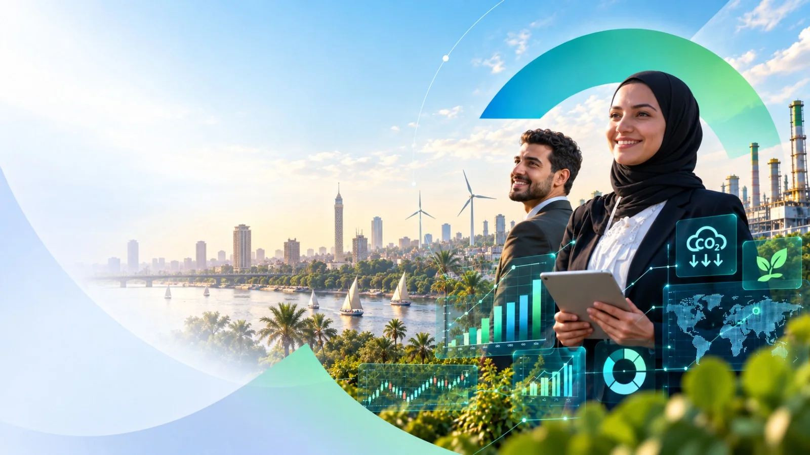
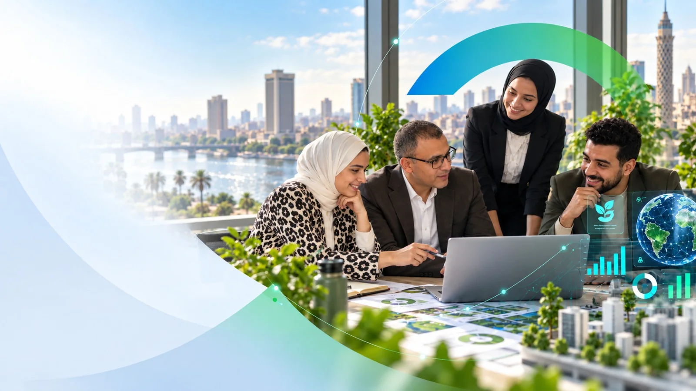
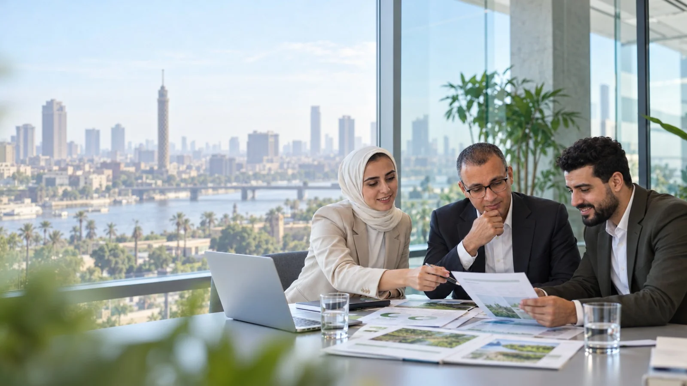

01
استشارات الاستدامة والاقتصاد
استراتيجية الاستدامة والتحليل الاقتصادي وأثر السياسات ودمج ESG للشركات والمؤسسات المالية.
استكشف الخدمة →ريادة ESG مدفوعة بالابتكار
شريك استراتيجي يجمع بين خبرة ESG والتكنولوجيا المتقدمة لتحويل الطموح إلى قرارات وخرائط طريق وأثر قابل للقياس.


الخدمات
تبدأ الرحلة من الاستراتيجية وتمتد إلى التقارير والكربون والتقييم والذكاء الاصطناعي والتنفيذ.
استراتيجية الاستدامة والتحليل الاقتصادي وأثر السياسات ودمج ESG للشركات والمؤسسات المالية.
استكشف الخدمة →
تقارير ESG والإفصاحات المناخية وتقارير البصمة الكربونية بوضوح ومصداقية.
استكشف الخدمة →
تدريب عملي يبني قدرات ESG لدى القيادات والفرق والوظائف المتخصصة.
استكشف الخدمة →
استشارات أسواق الكربون ودعم المشروعات ومعلومات السوق لاتخاذ قرارات مناخية واعية.
استكشف الخدمة →
منظومة ESG مترابطة تجمع المعرفة والأدوات والبيانات وخبرة الممارسين.
استكشف الخدمة →
تحسين التصنيفات والمقارنة المعيارية وتحليل الفجوات لتعزيز أداء الاستدامة.
استكشف الخدمة →
حلول مدعومة بالذكاء الاصطناعي لجمع بيانات ESG والكربون والتحليل والمتابعة والتقارير.
استكشف الخدمة →
مسارات خفض انبعاثات قائمة على العلم تحول طموحات الحياد الكربوني إلى إجراءات عملية.
استكشف الخدمة →
دعم منظم لقطاع المجوهرات للاستعداد والتوافق مع متطلبات مجلس المجوهرات المسؤولة RJC.
استكشف الخدمة →الأهداف العالمية
اختر أي هدف لاستعراض موقع مصر، والمقارنات الإقليمية، والمؤشرات، والملاحظات، والغايات، والإحصاءات والمصادر داخل نفس القسم.
شركاؤنا
من الخدمات المالية والتأمين إلى الصناعة والزراعة والتعليم والثقافة.
التعاونات
ورش عمل، تحليل بيانات، استشارات قطاعية، وتعاون عملي من الاستراتيجية حتى التقارير.

منهج iESG
منهج متكامل يربط الاستراتيجية بالتنفيذ والقياس، ويحوّل الاستدامة إلى قرارات عملية وقيمة قابلة للإثبات.
منصة iESG
منصة تجمع المعرفة والبيانات والتحليلات وأدوات المتابعة لدعم قرارات الاستدامة والتقارير.
لديك تحدٍ أو مشروع في الاستدامة؟